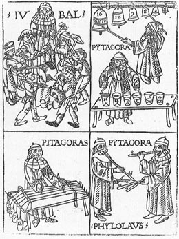

Chapter 6 "How the numerical ratios of the notes were discovered"

He was plunged one day in thought and intense reasoning, to see if he could devise some instrumental aid for the hearing which would be consistent and not prone to error, in the way that sight is assisted by the compasses, the measuring rod (kanon) and the dioptra, and touch by the balance and by the devising of measures; and happening by some heaven-sent chance to walk by a blacksmith's workshop, he heard the hammers beating iron on the anvil and giving out sounds fully concordant in combination with one another, with the exception of one pairing: and he recognized among them the consonance of the octave and those of the fifth and the fourth. He noticed that what lay in between the fourth and the fifth was in itself discordant, but was essential in filling out the greater of these intervals. Overjoyed at the way his project had come, with god's help, to fulfillment, he ran into the smithy, and through a great variety of experiments he discovered that what stood in direct relation to the difference in the sound was the weight of the hammers, not the force of the strikers or the shapes of the hammer-heads of the alteration of the iron which was being beaten. He weighed then accurately, and took away for his own use pieces of metal exactly equal in weight to the hammers.
Then he fixed a single rod from corner to corner under his roof, so that no variation should arise or even be suspected of arising from the peculiarities of different rods, and hung from it four strings, each of the same material, and consisting of a equal number of strands, and each of equal thickness and twisted to the same extent as each of the others. He then attached a weight to the lower part of each string. And having so contrived it that the length of every string was in all respects absolutely equal, he then plucked strings two at a time in turn, and found the concords previously mentioned, a different concord for each pairing.
He perceived that the string under tension from the biggest object attached sounded at an octave in relation to the one under tension from the smallest. The former was of twelve units of weight, the latter of six. Hence he showed the octave is in duple ratio, as the weights themselves implied. He found that the biggest sounded at a fifth in relation to the smallest but one (which had eight units of weight), and revealed from this that the fifth is in hemiolic ratio (3/2), the ratio in which these weights stood to each other. In relation to the one second in weight to itself and greater than the others, which was of nine units, it sounded at the interval of a fourth, in conformity with the relations of the weights. And he at once perceived that this ratio was epitritic (4/3), and that this same string was in hemiolic ratio to the smallest (since that is the ratio of 9 to 6): and in the same way the smallest but one, carrying eight units, stood in epitritic ratio to the one that carried six, and in hemiolic ratio to that which carried twelve. And hence he established that what lies between the fourth and the fifth, that is, that by which the fifth exceeds the fourth, is in epodoic ratio (9/8), that is which nine units stands to eight. It was also proved that the octave can be constructed in each of two ways, either in conjunction of the fifth and the fourth, since duple ratio consists in a conjunction of hemiolic and epitritic - as in the numbers 12, 8, 6 - or the other way round, in the conjunction of the fourth and the fifth, since duple ratio consists ina conjunction of epitritic and hemiolic - as in the numbers 12, 9 6, which are ordered in that sort of way.
Then, having worked on the weights until both hand and hearing were sore, and having established with reference to them the ratios appropriate to their relative positions, he skillfully transferred the common tying point of the strings, where they were all suspended together from the diagonal rod, to a stick attached to his instrument, a stick which he called a chordotonon, and he transferred the amounts of tension, in the same ratios that were produced by the weights, to a proportionate degree of twist in the kollaboi (tuning mechanism) at the upper end. Using this as a foundation and as it were an indubitable indicator, he went on to extend his researches to various kinds of instrument, including beaten pots, auloi, syringes, monochords, trigona and other like them, and he found the conception arrived at through number to be concordant and immutable in all of them. He named the noted note characterized by the number 6 "hypate", the one characterized by 8 "mese", which stands to hypate in epitritic ratio, the one characterized by 9 "paramese", which is a tone higher than mese and thus stands to it in epogdoic ratio, and the one characterized by 12 he called "nete". And at the same time he filled in the gaps between them according to the diatonic genus, with notes in their proper ratios, between them according to the diatonic genus, with notes in their proper ratios, and thus made the octachord subservient to concordant numbers, that is, to duple, hemiolic and epitritic ratio, and to the difference between the latter two, the epogdoic ratio."
translation by Andrew Barker from "Greek Musical Writings,
Volume II, Harmonic and Acoustic Theory", Cambridge University Press, 1989